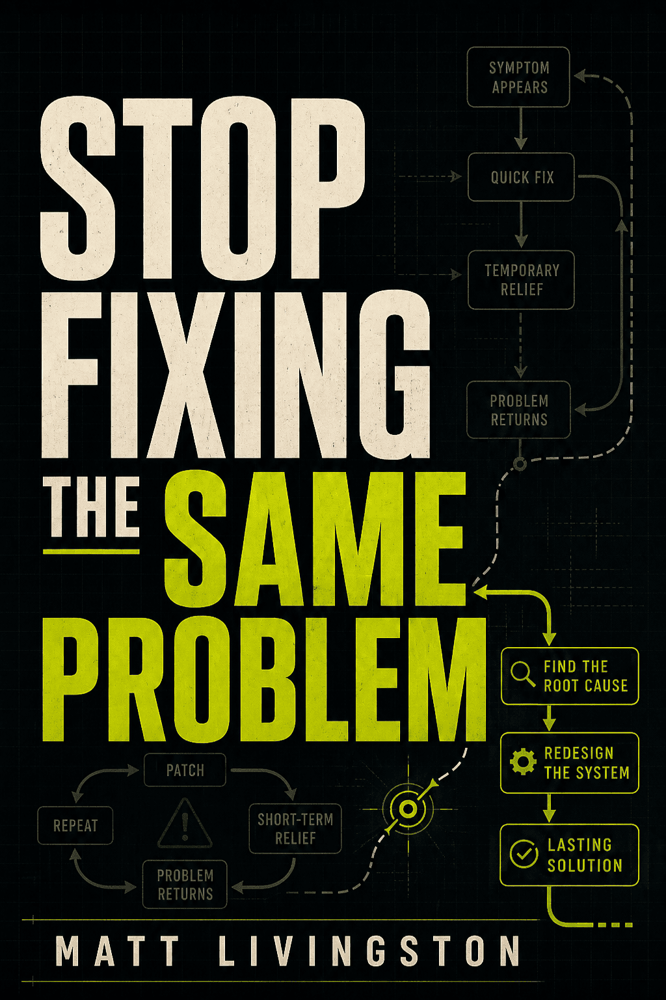

You run a business, project, household, or personal system with very little external structure.

For recurring failures, fragile routines, and problems that keep coming back
The same problem keeps returning.
Stop Fixing the Same Problem is a free practical guide to finding the real failure point, changing the system, and making better outcomes easier.
No motivational speech. No complicated productivity religion. Just a clearer way to investigate recurring problems and redesign what happens next.
Free full-length digital edition by Matt Livingston. Includes the Friction Audit worksheet.
When repetition becomes evidence
A single failure may be bad luck. When the same failure keeps appearing at the same stage, under the same conditions, it is evidence.
Something in the process is making that result easier than the result you want. The task starts with missing information. The next action is vague. The tool is stored somewhere inconvenient. The standard is too high to survive an ordinary bad day.
Then the operator gets blamed. This book starts somewhere more useful: what keeps making this outcome make sense?
What the book helps you do
- Describe a recurring problem without turning it into a judgment about yourself
- Reconstruct the pattern behind the last several failures
- Identify hidden friction before, during, and after the visible task
- Trace the failure backward to the earliest preventable break
- Remove decisions that do not deserve to be made repeatedly
- Build defaults that still work when attention moves elsewhere
- Create minimum versions that survive difficult days
- Close open loops without carrying everything in memory
- Test whether a system actually improves the outcome
- Retire tools, routines, and trackers that no longer earn their keep
Inside the system
The guide moves from vague complaint to visible sequence, then from visible sequence to a system change you can actually test.
- Name the recurring problem
- Reconstruct the pattern
- Run the friction audit
- Find the first preventable break
- Remove unnecessary decisions
- Build better defaults
- Add floors for bad days
- Test, document, and retire what does not matter
This is for you if
You are good at the main work, but lose time to setup, follow-up, maintenance, organization, or closure.
You have already tried apps, planners, reminders, routines, and discipline bursts, and the same weak point keeps returning.
Not a promise that every difficulty can be engineered away. Not a rigid productivity method. Not another system that becomes a hobby.
The included Friction Audit walks one recurring problem through ten questions so you can find one meaningful lever.
Choose one repeated problem. Find one condition. Change it. Test the result. Keep what works.